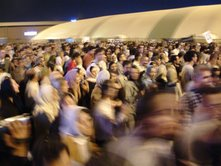

پذيرش > اخبار > دردسری به نام شیرین عبادی/ الناز انصاری


 دردسری به نام شیرین عبادی/ الناز انصاری دردسری به نام شیرین عبادی/ الناز انصاری
24 دی 1387 - - نسخه قابل چاپ
تغییر برای برابری - الناز انصاري: برخوردهاي اخير حاكميت با شيرين عبادي با شدتي بيش از سالهاي گذشته ادامه دارد. نگاهي به روند اين برخوردها حكايت از تلافي كينه اي ديرين در مدتي اندك دارد. از يادداشت هاي پراكنده ستون خبر ويژه روزنامه كيهان و تحليل دشمن يابان اين روزنامه مبني بر بهايي بودن دختر عبادي و تائيد اين دشمن سازي ها توسط خبرگزاري رسمي جمهوري اسلامي تا پلمپ دفتركانون مدافعان حقوق بشر و تجمع ها و شعارنويسي ها عليه خانم عبادي چندان فاصله اي وجود ندارد.
انرژي و زماني كه صرف تخريب شيرين عبادي در اين مدت شده است، هدفمندي اقدامات اخير را نشان مي دهد. خاموش كردن صداي نوبليستي كه برد جهاني دارد گویا براي حاكميت ارزش هر هزينه اي را دارد. طرح اين سئوال كه عبادي و كانون مدافعان حقوق بشر چه تاثيري در روند فعاليت هاي مدني ايران دارد، مي تواند به اين سئوال نيز پاسخ دهد كه اصرار حاكميت براي خاموشي اين صدا تا كجا مي تواند عملي شود.

يكي از ابتکارات اين برنده جايزه صلح نوبل، همانگونه كه از وي انتظار مي رفت، تشكيل شوراي ملي صلح در ايران بود. تشكيل اين شورا در زماني صورت گرفت كه ايران بيش از هر زمان ديگري بعد از انقلاب در جامعه جهاني درگير موضوع دستيابي به انرژي هسته اي بود. دولت کنونی ایران نيز بيش از هر دولت ديگري بر اين موضوع تاكيد داشت که دستيابي به انرژی هسته ای از بزرگ ترين چالش های پیش روی اوست. اين تاكيد ايران را بيش از پيش در معرض سياست هاي جنگ طلبانه آمريكا و اسرائيل قرار داد، چرا كه گفته می شد که عدم شفافيت ايران در دستيابي به انرژي هسته اي شك به صلح آميز بودن آن را تقويت ميکند. تكذيب هولوكاست و خواست محو اسرائيل نيز جرقه اي بر اين بشكه باروت ترديدهاي جهاني بود ... همه اين اتفاقات در كنار پيام هايي كه "گزينه نظامي روي ميز است" احتمال جنگ را تقويت مي كرد. دولت در همان روزهاي نخست صحبت و تحليل از احتمال جنگ را با ارسال نامه هايي به رسانه هاي داخلي ممنوع كرد. به این ترتیب شرایط به گونه ای بود که گویی حاكميت و دولت صحبت از صلح را بيش از جنگ خلاف اصول خود می داند. چنانچه چند روز پيش مادران صلح با شعار "مرگ بر صلح طلب" و با ضرب و شتم مواجه شدند.
محمدعلی عمویی : تهدیدی سازمان یافته علیه غیر خودی ها

محمد علي عمويي از جمله كساني بود كه در شوراي صلح حضور داشت. او در گفت و گو با سايت تغيير تشكيل اين شوراها را در جهان امروز ضروري مي داند و با تاكيد بر نقش مثبت شيرين عبادي در تشكيل اين شورا مي گويد:«مسئله جنگ هيولاي وحشتناكي براي ايران و هر كشوري است. برمبناي فجايعي كه هر جنگي در پي دارد و نمونه آن را در غزه شاهد هستيم چطور كانون مدافعان حقوق بشر يا يك برنده مهمترين جايزه صلح طلبي مي تواند خاموش بماند. به وجود آوردن شورايي براي صلح نظير آنچه خانم عبادي به وجود آوردند در دنياي كنوني اقدامي كاملا ضروري است»
اين كهنه كار سياسي كه راه درازي را از حزب توده ايران تا شوراي صلح و جايگاه كنوني اش طي كرده است در ادامه به انتقاد فعالان سياسي- اجتماعي خارج از دايره حاكميت اشاره كرده و مي گويد:«من از وجود نقدهاي منفي كه از سوي جريانات گوناگون با مواضع از پيش تعيين شده عليه خانم عبادي صورت مي گيرد، متعجبم. در فضايي كه رسانه هاي غير دولتي داخل ايران وجود ندارد، خانم عبادي تنها روزنه اي است كه صداي محرومترين زنان و كودكان و فعالان سياسي- اجتماعي را به گوش مردم مي رساند وبه دفاع از آنان مي پردازد».
عمويي برخوردهاي اخير عليه شيرين عبادي را برخوردي سازمان يافته مي داند. به زعم وي سياست خودي- غير خودي كه از سالها قبل در ايران اعمال مي شود سعي دارد از همه غيرخودي ها چهره ي يك جاسوس و ... ارائه كند و از هيچ تخريبي عليه اين افراد فرو گذار نمي كند. عمويي تجمع و شعارنويسي بر ديوار خانه و دفتر خانم عبادي را از سوي افرادي كه مسئوليت دولتي ندارند حربه اي مي داند كه اين عوامل را جداي از حاكميت نشان مي دهد و مي تواند اين كارها در نهايت ابزاري در دست مسئولان باشد براي ترساندن ترسوها.
آسیه امینی: موضوع حقوق بشرتنها برای سياستمدارانمان سياسي نه برای مدافعان آن

كانون مدافعان حقوق بشر يكي از تاثيرگذارترين نهادهاي حقوقي و مدني در ايران بود. عبادي با همكاري وكلايي كه با شجاعت و به رايگان به دفاع از حقوق متهمان سياسي اجتماعي مي پرداختند. دفاع و گزارش دهي منظمي كه از وضعيت اين متهمان صورت مي گرفت تاثير زيادي در پرونده هاي قضايي تشكيل شده عليه گروه هاي زنان؛ كارگران، دانشجويان و ... مي گذاشت. از سويي ديگر اين كانون و وكلاي اين كانون از جمله عبدالفتاح سلطاني اقدام به برگزاري كارگاه ها و نشست هايي براي شهروندان كردند كه به آنها حقوق شهروندي و حقوق متهمين را آموزش ميدادند . اين كارگاه ها و آگاهي بخشي هر چند حداقلي، اما در اين فضاي سركوب كه هيچ نهادي خارج از حاكميت نمي تواند فعاليت كند، اقدام مفيدي بود.
آسيه اميني از جمله كساني است كه در نشست ها و كارگاه هاي اين كانون شركت كرده است. تلاش براي نجات قربانيان سنگسار و نجات افرادي كه در كودكي مرتكب جرمي شده و در انتظار اعدام هستند فعاليتي است كه او داوطلبانه انجام مي دهد. هر دو اين قوانين موضوعاتي هستند كه ايران را بيش از موارد ديگر در جامعه بين الملل محكوم به نقض حقوق بشر مي كنند.
اميني نقش آگاهي بخشي كانون مدافعان حقوق بشر را يكي از عمده ترين كاركردهاي اين كانون مي داند. وي برخورد با شيرين عبادي و كانون مدافع حقوق بشر را پيرو نگاه سياسي حاكمان به موضوع حقوق بشر مي داند و مي گويد:« ما در كشوري زندگي مي كنم كه موضوع حقوق بشر هم بين سياستمداران هم مردم تبديل به يك موضوع كاملا سياسي شده است. اما براي مدافعان حقوق بشر رويكرد اصلي بازشناساندن و بازشناسي موضوعات حقوق بشري در افكار عمومي است. در همين راستاست كه نقش شخصي مثل شيرين عبادي به دليل شهرت و اعتبار جهاني شان پر رنگ تر مي شود و حرف و عمل شان تاثير مستقيمي بر اين جريان مي گذارد. در خلا نهادها تحقيقاتي و مراكز مطالعاتي و آموزشي كانون مدافعان حقوق بشر نه تنها عملا با وكالت پرونده هاي قضايي بلكه با آموزشي كه درباره موضوعات حقوق بشر مي داد در بازشناسي اين مفاهيم موثر بود و اين يكي از مهم ترين عملكردهاي كانون و خانم عبادي است».
اميني جايزه نوبل را براي هر كشوري افتخاري مي داند كه دولت ها و مردم به يك اندازه مي توانند از اين افتخار جهاني بهرمند شود ولي با ابراز تاسف از سياست ايران در قبال شيرين عبادي مي گويد:«جايگاه سياسي- اجتماعي و محبوبيتي كه پيرو اين جايگاه به وجود مي آيد شامل همه افراد است و رسانه هاي ملي نيز در انتقال اين محبوبيت نقش مهمي دارند. من متاسفم كه در كشور ما برنده صلح نوبل نه تنها هيچ وقت مورد تقدير و تحسين سياستمدارانمان قرار نگرفت و از شهرت او براي دگرگون كردن تصويري كه جهان از كشورمان دارد استفاده نشد، بلكه رسانه هاي ملي ما نيز چنان برخوردي با ايشان كرده اند كه خود به تنهايي نقل حكايت نقض حقوق بشر در ايران است».
اين روزنامه نگار در پايان به نقش رسانه ها در دنياي امروز اشاره مي كند و مي گويد: با همه سانسورها، اخبار امروز خارج از اراده و دست هاي ما كار خود را انجام مي دهند و آنچه بر عبادي و ديگر فعالان حقوق بشر مي رود بر ديده بانان جهاني پوشيده نخواهد ماند.
عیسی سحرخیز: فشار بر عبادی قابل پیش بینی بود

در كنار موانعي كه براي اغلب كنشگران داخل كشور وجود داشت، حاشيه امن شيرين عبادي دلگرمي بود براي فعالاني كه فكر مي كردند حاكميت هيچ گاه زير بار هزينه ي برخورد با او نمي رود. عيسي سحرخيز در گفت و گو با سايت تغيير با تحليل نگاه حاكميت به فعاليت هاي جامعه مدني، برخوردهاي اخير با شيرين عبادي را علي رغم هزينه هاي سياسي آن قابل پيش بيني مي داند. به گفته وي عدم توجه كانون مدافعان حقوق بشر و خانم عبادي به لزوم كار شبكه اي نقطه ضعفي بود كه مي توانست هزينه اين برخوردها را براي عبادي و همكارانش كاهش دهد. سحرخيز با چيدن پازلي كه شرايط فعلي را توضيح مي دهد، احتمال اقدامات خطرناك تر از جمله ترور فيزيكي را محتمل مي داند.
وي در تفسير نگاه حاكميت به فعاليت هاي مدني مي گويد:«بحث كانون مدافعان حقوق بشر را اگر به صورت منفرد و جدا از جامعه مدني در نظر بگيريم به خطا رفته ايم. در اين سال ها شاهد ادعايي بوده ايم كه "ان جي او" ها، وبلاگ ها و جامعه مدني به دنبال انقلاب نرم در ايران هستند. اين ادعا و توهم بهانه پلمپ دفاتر و دستگيري بسياري شد. ادامه اين روند در سال هاي اخير برخورد با كانون مدافعان حقوق بشر را هم قابل پيش بيني مي كرد. همه اين برخوردها نشان دهنده تاثير گذاري مثبت اين نهادها است كه قدرت حاكميت را به چالش مي كشد و حكومت هاي توتاليتر چنين چالشي را تحمل نمي كنند. قدرت كانون مدافعان حقوق بشر به دليل حضور خانم عبادي بيش از ديگر نهادها بود. تاسيس شوراي ملي صلح و كميته دفاع از انتخابات آزاد، سالم و عادلانه،اقداماتي بود كه نگراني ها در مورد اثرگذاري دراز مدت فعاليت خانم عبادي را افزايش مي داد. با همه اين موارد به نظر من اين برخوردها قابل پيش بيني و پيش گيري بود».
اين تحليلگر سياسي پيش گيري از اتفاقات اخير را منوط به ايجاد شبكه هاي ارتباطي بين فعالان سياسي- اجتماعي، نهادها و "ان جي او" ها مي داند. به زعم وي اگر كانون مدافان حقوق بشر جمعيت خود را وسعت مي داد و در اين مدت با ظرفيت سازی شبكه قوي تري از كنشگران مي ساخت شايد ضريب امنيت خود و حتي خانم عبادي را بالاتر از برده بود.
سحرخيز حساب كردن روي حاشيه امنيتي عبادي را نگاهي خوش بينانه خوانده و مي گويد:«خانم عبادي اولين نوبليست جهان نيست. درست است كه با وي برخوردي نمي كنند كه با يك فعال عادي مي كنند، اما كافي است نگاهي به وضعيت كساني كنيم كه در كشورهاي توتاليتر زندگي مي كنند و اتفاقا برندگان همين جايزه نوبل صلح هستند. عبادي اولين نوبليستي نيست كه مورد هجوم حكومت خودش قرار مي گيرد. هر چه حكومت خود را در نقطه ضعف ببيند بيشتر به منتقدشان فشار مي آورد. حالا هم حاكميت در وضعي گرفتار آمده كه ناقض حقوق بشر شناخته شده است و مي تواند با اين منطق كه "آب كه از سر گذشت ..." هزينه سنگين برخورد با مدافعان حقوق بشر و از جمله خانم عبادي را هم بپردازد.»
سحرخيز فشارهاي اخير را تا حدي قابل توجيه براي حاكميت مي داند كه شيرين عبادي را وادار به ترك وطن كند. در حالي كه عبادي با صراحت اين ايده را رد كرده و رسما اعلام كرد هيچ گاه ايران را ترك نخواد كرد و به فعاليت اش در كشور ادامه خواهد داد. اين مصاحبه در كنار آخرين گفت و گوهاي عبادي كه اعلام كرده بود خود را در موقعيت "فروهر ها" مي بيند، با در نظرگيري نامه هاي تهديد آميزي كه بارها براي وي ارسال شده بود، نگراني ها از تهديد جان وي را قوت مي بخشد.
بارها در دادگاه شاهد بوديم يا از متهمان شنيده بوديم كه: «به شيرين عبادي حساسن. قاضي مي گه وكيل رو عوض كنيد كارتون درست مي شه». چه چيزي در وجود اين زن دادگاه ها را به زانو در مي آورد كه مي گويند وكيل پرونده هر كس باشد جز او؟ چه چیزی هراس انگیزاست وقتی ايراد مالياتي را طرح می کنند، چه چیز ذهن چند فرد بسیجی را چنان درگير مي كند که گوش به فرمان و تا پاي جان شعار دهند و با غلط هاي املايي شعارهايشان را بنويسند. نه قدرتي است كه در كلام و شجاعت عبادي خفته و نه شهرت جهاني او. آنچه ترس بر دل مي اندازد شايد به سادگي يك عكس باشد. عكسي كه در تاريخ 22مهر سال 82 در فرودگاه مهرآباد گرفته شده است. عكس هزاران ايراني است كه يك صدا او را بانوي صلح ايران خواندند و به خاطر او دست به دست هم دادند. عكس آن روز مي تواند ترسناك باشد در سرزميني كه صلح و برابري آرزوي آدم هاست.
ارسال به
بالاترین
،
توییتر
،
فریندفید
،
فیسبوک
در همين بخش :
 پروین ذبیحی برنده جایزه حقوق بشری سازمان غيردولتى اتريشى سودويند شد پروین ذبیحی برنده جایزه حقوق بشری سازمان غيردولتى اتريشى سودويند شد
پخش کارت پستال و بروشور در روز جهانی زن در تهران
تمدید زمان برای امضای بیانیهی جمعی از فعالان زن به مناسبت هشت مارس
مجوزی که در نطفه خفه شد
بیش از 2000 امضا در اعتراض به تبعیض های آموزشی به مجلس تحویل داده شد
ديگر بخش ها :
طرح یک میلیون امضا
|
مقالات
|
سایت نوشته ها
|
اخبار
|
گزارش كمپين
|
گفت و گو
|
علیه سکوت
|
كوچه به كوچه
|
نامه های شما
|
گزارش ویژه
|
گفتگو با اعضا
|
ویژه سالگرد کمپین
|
تصویر برابری
|
دل آرام علی
|
تریبون
|
مقالات
|
تاریخ شفاهی
|
خارج از چارچوب
|
کتابخانه
|
درباره کمپین
|
کمپین در شهرها
|
کمپین در بند
|
صدای تغییر
|
ویژه 22 خرداد
|
لایحه حمایت از خانواده
|
گالری
|
عشا مومنی
|
امیر یعقوبعلی
|
خدیجه مقدم
|
راحله عسگری زاده و نسیم خسروی
|
پروین اردلان،جلوه جواهری، مریم حسین خواه، ناهید کشاورز
|
زینب پیغمبرزاده
|
سعیده امین، سارا ایمانیان، محبوبه حسین زاده، ناهید کشاورز و همایون نامی
|
احترام شادفر
|
نسیم سرابندی زاده،فاطمه دهدشتی
|
وبلاگ مهمان
|
پرونده خرم آباد
|
دستگیری ها
|
مریم مالک
|
پرستو اللهیاری
|
مهرنوش اعتمادی
|
سمیه رشیدی
|
Other Languages
|
همراهان
|
«فراخوان کمپین ده روز با بهاره هدایت»
| English
|